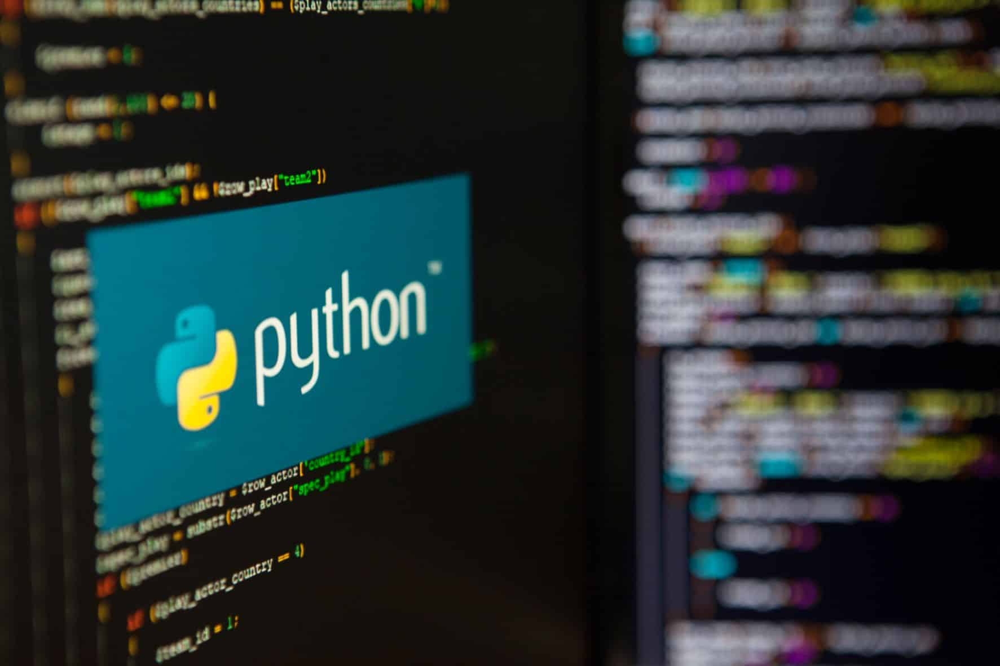
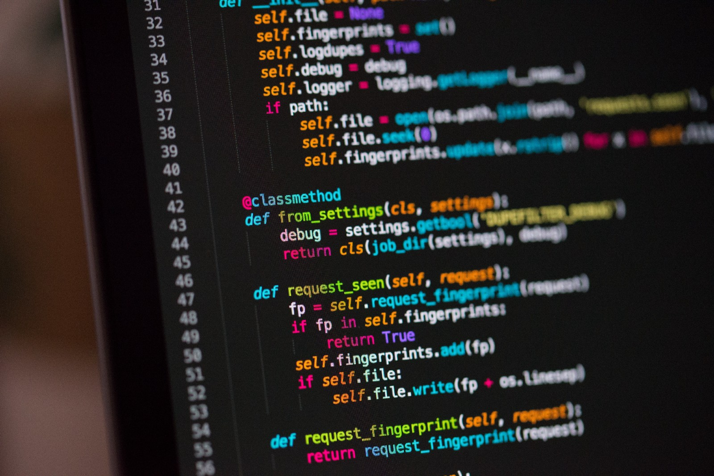

la programación es mucho más que escribir código. Es una habilidad que abre puertas a la innovación, el empleo significativo y el desarrollo personal. En un mundo donde la tecnología juega un papel central en todos los aspectos
de la vida, comprender y saber programar se vuelve esencial para participar y prosperar en la economía digital del siglo XXI

En la actualidad, la programación no es solo una habilidad técnica especializada, sino un elemento fundamental que impulsa el funcionamiento de nuestra sociedad digital. Desde dispositivos móviles hasta infraestructuras complejas en la nube, la programación está en el corazón de casi todas las tecnologías que utilizamos y dependemos diariamente. Aquí exploraremos en profundidad por qué la programación es crucial en diversos aspectos:
1. Motor de la Innovación Tecnológica:
La programación es el lenguaje mediante el cual se crean aplicaciones,
software, sistemas operativos, y más. Es el pilar sobre el cual se construyen las
innovaciones tecnológicas que transforman industrias enteras. Desde inteligencia artificial
y aprendizaje automático hasta realidad aumentada y blockchain, todas estas tecnologías dependen
de la habilidad de los programadores para escribir, depurar y mantener código eficiente y funcional.
2. Creciente Demanda en el Mercado Laboral:
Con la digitalización creciente de la economía global, las habilidades en programación son cada vez más valoradas por los empleadores. Desde startups hasta grandes corporaciones, todas buscan talento que pueda desarrollar software, diseñar interfaces de usuario intuitivas, administrar bases de datos complejas y más. La programación no solo ofrece estabilidad laboral, sino también oportunidades significativas de crecimiento profesional y salarial en campos como la ciberseguridad, el análisis de datos, el desarrollo web y móvil, entre otros.

Uno de los aspectos más poderosos de la programación es su capacidad para empoderar a las personas para que creen soluciones a problemas específicos que enfrentan en sus comunidades y más allá. Desde aplicaciones móviles que facilitan la comunicación y la logística, hasta plataformas educativas que democratizan el acceso a la información, la programación permite a los individuos no solo consumir tecnología, sino también crearla y modificarla según sus necesidades específicas.
4. Acceso a Recursos Educativos y Comunidad Global:
El aprendizaje de la programación se ha vuelto más accesible que nunca gracias a recursos en línea gratuitos y plataformas de educación masiva abierta (MOOCs). Estos recursos permiten a cualquier persona, independientemente de su ubicación geográfica o antecedentes educativos, aprender a programar desde la comodidad de su hogar. Además, la comunidad global de programadores ofrece un entorno de apoyo y colaboración invaluable donde los aprendices pueden compartir conocimientos, resolver problemas y aprender de las mejores prácticas de la industria.
5. Capacitación en Pensamiento Lógico y Resolución de Problemas:
La programación enseña a descomponer problemas complejos en problemas más pequeños y manejables, y luego a abordarlos de manera sistemática y estructurada. Este enfoque no solo es fundamental para la escritura de código eficiente, sino que también fomenta habilidades cognitivas como el pensamiento crítico, la resolución de problemas y la creatividad. Los programadores deben ser capaces de anticipar posibles errores y solucionar problemas de manera eficiente, habilidades que son transferibles a muchas otras áreas de la vida y del trabajo.

1. Python:
es un lenguaje de programación interpretado, de alto nivel y de propósito general. Es conocido por su sintaxis clara y legible, lo que lo hace ideal para principiantes y para desarrollo rápido de aplicaciones. Python es utilizado en una amplia gama de aplicaciones, desde desarrollo web hasta análisis de datos, inteligencia artificial y automatización de tareas.
Características:
Legibilidad: Su sintaxis simple y clara facilita la escritura y el mantenimiento del código.
Gran ecosistema: Posee una vasta colección de bibliotecas y frameworks, como Django para desarrollo web, NumPy y pandas para análisis de datos, y TensorFlow y PyTorch para aprendizaje automático.
Multiparadigma: Soporta programación orientada a objetos, funcional e imperativa.
Portabilidad: Es multiplataforma y puede ejecutarse en diferentes sistemas operativos sin cambios significativos en el código.
2.JavaScript:
es un lenguaje de programación interpretado, orientado a objetos, basado en prototipos y dinámico. Es conocido por su papel central en el desarrollo web, permitiendo la creación de páginas web interactivas y dinámicas. JavaScript se ejecuta en el navegador del cliente, lo que reduce la carga en el servidor y permite una mayor interactividad y respuesta rápida.
Características:
Multiparadigma: Soporta programación orientada a objetos, funcional y imperativa.
Basado en eventos: Permite la ejecución de código en respuesta a eventos del usuario o del sistema.
Interoperabilidad: Se integra fácilmente con HTML y CSS, y puede interactuar con APIs externas.
Versatilidad: Se puede usar tanto en el lado del cliente como en el servidor (Node.js).
3.C++:
es un lenguaje de programación de propósito general que es una extensión del lenguaje C. Es conocido por su eficiencia y control sobre los recursos del sistema, lo que lo hace ideal para aplicaciones de alto rendimiento como juegos, sistemas operativos y software de tiempo real.
Características:
Eficiencia: Permite un control preciso sobre la memoria y el hardware.
Multiparadigma: Soporta programación orientada a objetos, genérica e imperativa.
Bibliotecas estándar: Proporciona una amplia biblioteca estándar (STL) que incluye estructuras de datos y algoritmos comunes.
Portabilidad: Es multiplataforma y puede ser utilizado en diversos sistemas operativos y arquitecturas de hardware.

4. Java:
es un lenguaje de programación orientado a objetos y de propósito general que es ampliamente utilizado en el desarrollo de aplicaciones empresariales, aplicaciones móviles (especialmente Android) y aplicaciones web. Java es conocido por su portabilidad, ya que el código Java puede ejecutarse en cualquier dispositivo que tenga la Máquina Virtual de Java (JVM).
Características:
Orientado a objetos: Promueve el uso de objetos y clases, facilitando la reutilización y el mantenimiento del código.
Portabilidad: "Escribe una vez, ejecuta en cualquier lugar" gracias a la JVM.
Seguridad: Proporciona características robustas de seguridad, haciéndolo ideal para aplicaciones de red.
Rendimiento: Aunque es un lenguaje interpretado, la JVM y las optimizaciones en tiempo de ejecución mejoran su rendimiento.
5. C# (C Sharp):
es un lenguaje de programación moderno, orientado a objetos y de propósito general desarrollado por Microsoft. Es utilizado principalmente en el desarrollo de aplicaciones de escritorio y web en la plataforma .NET. C# combina la potencia y flexibilidad de C++ con la simplicidad y seguridad de Java.
Características:
Orientado a objetos: Facilita la creación de software modular y reutilizable.
Integración con .NET: Aprovecha el amplio ecosistema de la plataforma .NET para el desarrollo de aplicaciones.
Seguridad de tipos: Proporciona verificación estricta de tipos en tiempo de compilación, reduciendo errores en tiempo de ejecución.
Desarrollo rápido: Herramientas y entornos de desarrollo integrados como Visual Studio agilizan el proceso de desarrollo.
6.Ruby:
es un lenguaje de programación dinámico, orientado a objetos y de propósito general. Es conocido por su sintaxis simple y elegante, que facilita la escritura de código limpio y legible. Ruby es ampliamente utilizado en el desarrollo web, especialmente con el framework Ruby on Rails.
Características:
Simplicidad: Su sintaxis concisa y expresiva permite escribir menos código para hacer más.
Orientado a objetos: Todo en Ruby es un objeto, lo que facilita la reutilización y extensión del código.
Flexibilidad: Permite la redefinición de clases y métodos, así como la creación de código altamente dinámico.
Comunidad activa: Posee una comunidad vibrante y una vasta cantidad de gemas (bibliotecas) que extienden su funcionalidad.

7. PHP:
es un lenguaje de programación del lado del servidor diseñado específicamente para el desarrollo web. Es embebido en HTML, lo que facilita la creación de páginas web dinámicas y la interacción con bases de datos. PHP es uno de los lenguajes más utilizados para el desarrollo de sitios web y aplicaciones web.
Características:
Facilidad de uso: Es fácil de aprender y de usar, lo que lo hace accesible para principiantes.
Interacción con bases de datos: Se integra fácilmente con bases de datos como MySQL, facilitando la creación de aplicaciones web dinámicas.
Rendimiento: Ha sido optimizado para el desarrollo web, ofreciendo un buen rendimiento en aplicaciones web.
Amplio soporte: Posee una vasta comunidad y una gran cantidad de frameworks como Laravel y Symfony que facilitan el desarrollo.
Swift:
es un lenguaje de programación desarrollado por Apple para el desarrollo de aplicaciones en iOS, macOS, watchOS y tvOS. Es un lenguaje moderno y seguro que ha sido diseñado para ser fácil de usar y muy eficiente.
Características:
Seguridad: Proporciona una gestión segura de la memoria y evita errores comunes de programación.
Rendimiento: Es rápido y eficiente, aprovechando al máximo el hardware de Apple.
Interoperabilidad: Puede trabajar junto con Objective-C, permitiendo la reutilización de código existente.
Sintaxis moderna: Su sintaxis es concisa y expresiva, facilitando la escritura de código claro y legible.
9. Go (Golang):
también conocido como Golang, es un lenguaje de programación desarrollado por Google. Es conocido por su simplicidad, eficiencia y características concurrentes, lo que lo hace ideal para el desarrollo de software de servidor, sistemas distribuidos y aplicaciones en la nube.
Características:
Simplicidad: Su sintaxis es sencilla y fácil de aprender.
Rendimiento: Es compilado y ofrece un rendimiento cercano al de C/C++.
Concurrencia: Proporciona primitivas de concurrencia como goroutines y canales, facilitando el desarrollo de aplicaciones concurrentes y distribuidas.
Gestión de memoria: Utiliza un recolector de basura que gestiona automáticamente la memoria, evitando fugas y errores comunes.
10. Kotlin:
es un lenguaje de programación moderno y orientado a objetos desarrollado por JetBrains. Es totalmente interoperable con Java y es el lenguaje preferido para el desarrollo de aplicaciones Android. Kotlin mejora muchos de los puntos débiles de Java, ofreciendo una sintaxis más concisa y características avanzadas.
Características:
Interoperabilidad: Puede integrarse perfectamente con el código Java existente.
Concisión: Su sintaxis es más breve y legible que la de Java, reduciendo el código boilerplate.
Seguridad: Ofrece características de seguridad como la gestión de nulabilidad, evitando errores comunes de null pointer.